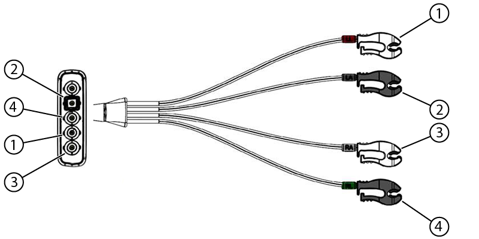

- 00000018WIA30208110GYZ
- id_20040806.35
- Apr 26, 2023 2:44:07 PM
Checking the ECG leads
Testing the electrical connections on the ECG cables.
Prerequisites
| Personnel requirements | |||
|---|---|---|---|
| Required persons | Preliminary requirements | Procedure | Finalization |
| 1 | - | 5 minutes | - |
| Tools and Test Equipment | |||
|---|---|---|---|
| Description | Quantity | Part Number | Manufacturer |
| Multimeter | 1 | - | - |
About this task
Checking the ECG cables for wired gating
Procedure
- If not already done, disconnect the ECG cables from the PAC and from each other.
Figure 1. PIN diagram of ECG lead 
- Check the resistance of the ECG cables from each of the leads at point A to the other end of that lead at point B. The resistance should be 55k ohms to 63k ohms.
Figure 2. Connections A and B on ECG cables 
- Check the resistance of the ECG cables from each lead at point B to its respective connection at point C. The resistance should be 0 ohms.
Figure 3. PAC assembly with ECG leads connected 
Checking the ECG cables for wireless gating
About this task
Procedure
- Check the resistance of the ECG cables from each lead at point 1 to its respective connection at point 2. The resistance should be 23k ohms to 27k ohms.
Figure 4. ECG cable for the PAT  Note: The correct spot to measure each lead is at the point shown.
Note: The correct spot to measure each lead is at the point shown.Figure 5. Test point on ECG clip lead 
Figure 6. PIN diagram of ECG leads 
1 LL (Red) 2 LA (Black) 3 RA (White) 4 RL (Green)
Finalization
Procedure
Do a check scan. See Doing a check scan.